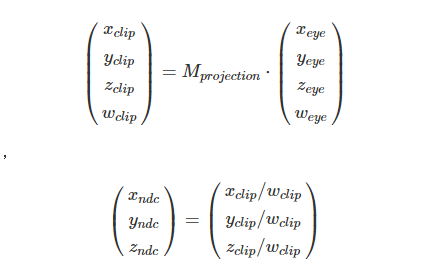
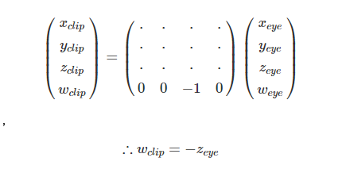
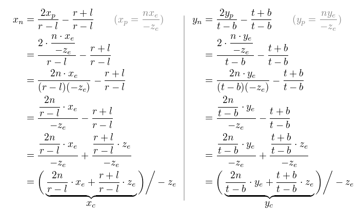
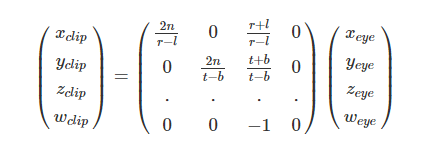
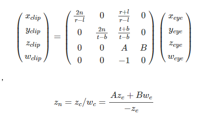
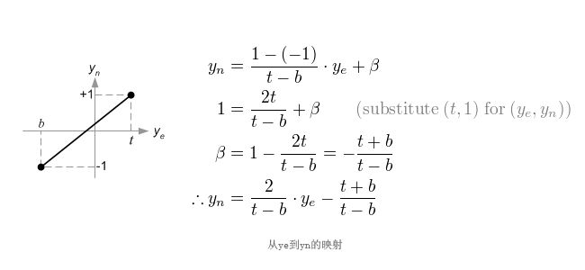
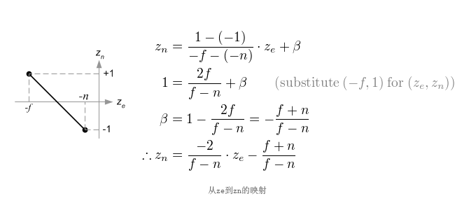

OpenGL Projection Matrix(译)
撰写于 2016-10-29 修改于 2018-01-29 分类 翻译
OpenGL投影矩阵
近期看到OpenGL矩阵变换，发现一篇外国人songho写的文章OpenGL Projection Matrix还不错，搜了一下，国内竟然没有翻译，就自己动动手翻一下，方便自己查阅。
简介
电脑的显示器是一个2D的平面，OpenGL渲染的3D场景一定要转换为2D的图像才能投射到计算机屏幕，投影矩阵就是被用来做这样的投影变换。首先，它会把所有的顶点数据从视觉坐标系（eye coordinates）转换到裁剪坐标系（clip coordinates）。然后，转换为裁剪坐标系的坐标除以w分量，转换为标准设备坐标（normalized device coordinates (NDC)）。
因此，我们必须要记住，裁剪（平截头体裁剪）和标准化设备坐标（NDC）变换都归结到投影矩阵，以下的两个部分描述了怎么通过6个边界值来创建一个投影矩阵：left, right, bottom, top, near, far。
需要注意的是，平截头体裁剪（clipping）在除以w分量之前，是在裁剪坐标系中执行的。在裁剪坐标系中，x, y, z分量都会与w分量进行比较，如果裁剪坐标小于-w,或者大于w分量，那么这个顶点就会被丢弃掉。即裁剪坐标必须要满足 -w < x, y, z < w。
裁剪后，OpenGL会重新构造多边形的边界。以下是一个三角形被平截头体裁剪。

透视投影(Perspective Projection)
在透视投影中，一个在截棱锥体（truncated pyramid frustum）（视觉坐标系（eye coordinates））被映射到一个立方体（NDC）中；x坐标从[l,r]映射到[1,-1]， y坐标从[b,t]映射到[-1,1]，z坐标从[n,f]映射到[-1,1]。

需要注意的是，视觉坐标系用的是右手坐标系，标准化设备坐标系（NDC）用的是左手坐标系。也就是说，在视觉坐标系中，摄像机是从原点向-Z轴看的，而在标准化设备坐标系（NDC）是从原点向+Z轴看的。因为glFrustum()传入的近距离（near）和远距离（far）的值只能是正数，所以在构造投影矩阵时我们需要把这两个值取反。
在OpenGL中，视觉坐标系中3D坐标点是要被投影到投影平面的近平面，下面的图就展示了如何将一个视觉坐标系中的点（xe, ye, ze）投影到近平面的（xp, yp, zp）。
平截头体俯视图

从平截头体的俯视图可以看出，通过相似三角形，可以计算出，在视觉坐标系下xe是如何映射到xp。
${x_p \over x_e} = {-n \over z_e}$
${x_p} = {-n \cdot x_e \over z_e} = {n \cdot x_e \over -z_e}$
平截头体侧视图

从平截头体的侧视图可以看出，yp通过相同的方法可以得到。
${y_p \over y_e} = {-n \over z_e}$
${y_p} = {-n·y_e \over z_e} = {n \cdot y_e \over -z_e}$
需要注意的是，xp 和 yp都依赖于ze，他们都与-ze成反比。换句话说，他们都要除以-ze，这是构建投影矩阵的第一步。在投影矩阵乘以视觉坐标系之后，裁剪坐标系依旧是以一个齐次坐标系。最后，他要除以齐次坐标的w分量才能成为标准设备坐标系（NDC）。
（注：翻译此文时，mathajx有些问题，可以在mathajx官网中测试通过，但在blog中无法使用复杂的公式，只好用图片）

因此，我们可以把裁剪坐标系下的w分量设置为-ze，所以投影矩阵的第4排就变为(0, 0, -1, 0).

下一步，我们要把xp和yp用线性关系映射到标准化设备坐标系下的xn和yn，即[l,r] => [-1,1] ; [b,t] => [-1,1]。
因此，我们可以把裁剪坐标系下的w分量设置为-ze，所以投影矩阵的第4排就变为(0, 0, -1, 0).


然后我们把xp和yp带入到上面的方程里面。

注意，我们为了做透视除法（xc/wc, yc/wc）,上面的两项的每一个方程都除以-ze。在这里，我们就把wc换成-ze，在因此在括号里面的式子就变成xc，yc。
通过这些方程，我们就找到了投影矩阵的第1行和第2行。

现在我们只剩下投影矩阵的第三行没有解决。zn同其他的解决方法不同，因为在视觉坐标系里面，ze在近平面上一直被投影为-n。但是我们需要唯一的z值来处理裁剪和深度测试。另外，我们一定要可以进行反投影（逆转换）。我们知道z值不依赖于x或者y值，因此我们可以借w分量来找到zn和ze的关系。我们可以像这样指定投影矩阵的第三行：

在视觉坐标系中，we等于1，因此这个方程变为：
$$
z_n = Az_e + B \over -z_e
$$
为了找到系数A，B的值，我们使用(ze, zn)的关系：(-n, -1), (-f, 1)，然后把他们带入到上面的方程中：
$$
\begin{cases}
\frac {-An + B} {n} = -1 \\
\frac {-Af + B} {f} = 1
\end{cases}
\rightarrow
\begin{cases}
-An + B = -n \quad (1) \\
-Af + B = f \quad (2)
\end{cases}
$$
为了解方程，我们重写等式(1):
$$
B = An - n \quad (1’)
$$
把等式1’带入到等式2中，可以解出A:
$$
-Af + (An - n) = f \quad (2)
$$
$$
-(f - n)A = f + n
$$
$$
A = - \frac {f+n} {f-n}
$$
把A带入到等式1中，可以得到B:
$$
(\frac {f + n} {f - n})n + B = -n \quad (1)
$$
$$
B = -n - (\frac {f + n} {f-n}) n = -(1 + \frac {f + n} {f-n})n = -(\frac {f-n + f+n} {f-n})n = -\frac {2fn} {f-n}
$$
我们算出了A和B，因此，ze和zn的关系变为：
$$
z_n = \frac{-\frac {f+n} {f-n} z_e - \frac {2fn} {f-n}} {-z_e} \quad (3)
$$
最后我们算出了全部的投影矩阵。完整的投影矩阵是这样的：
$$
\begin{pmatrix}
\frac {2n}{r-l} & 0 & \frac {r+l}{r-l} & 0 \\
0 & \frac {2n}{t-b} & \frac {t+b}{t-b} & 0 \\
0 & 0 & \frac {-(f+n)}{f-n} & \frac {-2fn}{f-n} \\
0 & 0 & -1 & 0 \\
\end{pmatrix}
$$
上面这个投影矩阵是针对普通的平截头体，如果这个视窗体（viewing volume）是对称的，也就是说 $r=-l,t=-b$，它可以被简化为：
$$
\begin{cases}
r + l = 0 \\
r - l = 2r \quad (width)
\end{cases}
\quad,\quad
\begin{cases}
t + b = 0 \\
t - b = 2t \quad (height)
\end{cases}
$$
$$
\begin{pmatrix}
\frac {n}{r} & 0 & 0 & 0 \\
0 & \frac {n}{t} & 0 & 0 \\
0 & 0 & \frac {-(f+n)}{f-n} & \frac {-2fn}{f-n} \\
0 & 0 & -1 & 0 \\
\end{pmatrix}
$$
在我们往下进行之前，再仔细看一下$z_e$和$z_n$之间的关系，也就是等式3。你可能会注意到这个等式是有理函数，而且$z_e$和$z_n$之间的关系是非线性的。这就意味着，在近平面时有非常高的精度，在远平面时精度比较低。如果[-n,-f]的范围变得很大，他会引起深度精度问题(z冲突)，即：如果$z_e$在远平面处小范围的变动，那么就不会影响$z_n$的值。n到f之间的距离应该尽量的短，来减少深度缓冲区精度问题。

正射投影(Orthographic Projection)
构造正射投影的投影矩阵要比透视投影简单的多。
所有在视觉空间中的$x_e, y_e, z_e$分量都是线性映射到标准设备坐标系中。我们只需要缩放一个立方体到一个正方体中，然后把它移到原点即可。

下面，让我们找出线性关系找出，投影矩阵中的各个元素。


因为对正射投影来说，w分量用不上，所以投影矩阵的第4行为(0, 0, 0, 1)。因此正射投影的完整投影矩阵为：
$$
\begin{pmatrix}
\frac {2}{r-l} & 0 & 0 & -\frac{r+l}{r-l} \\
0 & \frac {2}{t-b} & 0 & -\frac{t+b}{t-b} \\
0 & 0 & \frac {-2}{f-n} & -\frac {f+n}{f-n} \\
0 & 0 & 0 & 1 \\
\end{pmatrix}
$$
上面这个投影矩阵是针对普通的平截头体，如果这个视窗体（viewing volume）是对称的，即：$r=-l,t=-b$，这个投影矩阵会更简单：
$$
\begin{cases}
r + l = 0 \\
r - l = 2r \quad (width)
\end{cases}
\quad,\quad
\begin{cases}
t + b = 0 \\
t - b = 2t \quad (height)
\end{cases}
$$
$$
\begin{pmatrix}
\frac {1}{r} & 0 & 0 & 0 \\
0 & \frac {1}{t} & 0 & 0 \\
0 & 0 & \frac {-2}{f-n} & -\frac {f+n}{f-n} \\
0 & 0 & 0 & 1 \\
\end{pmatrix}
$$
(最后，强烈推荐去看一下原文下面的评论，也是很经典，高手云集!)